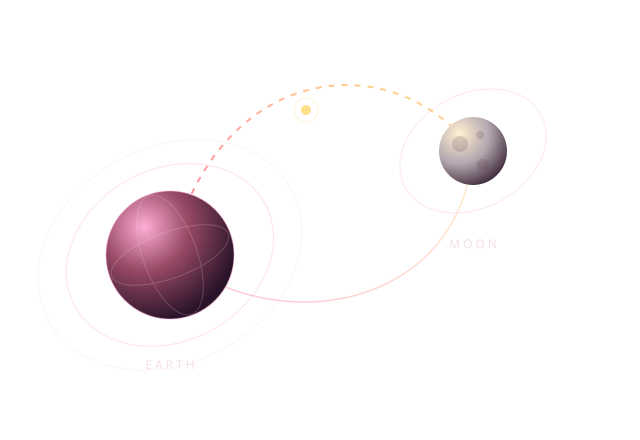

Stage 1 / Earth Launch
Calypso
An RP-1 and liquid oxygen launch stage carries the remaining stages from sea level into the mesosphere. After separation, Calypso returns to Earth for recovery and refueling.
Cislunar Transportation Architecture
A luxury lunar transportation company concept using a three-stage vehicle to carry people and supplies from Earth to lunar orbit and the Moon.
Latest deliverable: System Requirements Review presentation
View the Presentation
The Mission
Lunar Lyft is a two-semester aerospace team design project at Embry-Riddle Aeronautical University for a luxury lunar transportation company. The current concept supports up to 20 people, including the operating crew, along with food, water, medical supplies, tools, and other resources for lunar operations.
The three-stage vehicle connects Earth with Tranquility in near rectilinear halo orbit (NRHO). A separate lunar lander carries personnel and resources between lunar orbit and the surface. The architecture assumes existing orbital infrastructure and mining and research facilities at the lunar south pole.
The System Requirements Review brings together propulsion trade studies, the vehicle work breakdown and requirements, and preliminary designs for the vehicles and habitats.
Project Presentation
Mission assumptions, propulsion trades, vehicle designs, and lunar destinations.
Calypso launches the vehicle, the Intra-space Booster System provides trans-lunar injection, and the Big Yellow Orbital Bus carries crew and cargo to Tranquility.
Stage 1 / Earth Launch
An RP-1 and liquid oxygen launch stage carries the remaining stages from sea level into the mesosphere. After separation, Calypso returns to Earth for recovery and refueling.
Stage 2 / Trans-Lunar Injection
The hydrogen and liquid oxygen booster maneuvers into a low Earth parking orbit and performs trans-lunar injection. Fuel selection, flight path, and stage performance are being refined through trade studies.
Stage 3 / Crew & Cargo
The Big Yellow Orbital Bus continues toward the Moon, brakes into NRHO, and docks with Tranquility. It accommodates up to 20 people and supplies, with a planned return to Earth using skip re-entry.
Trade studies guide every vehicle and stage decision, including propulsion, fuel selection, flight paths, orbits, and lunar surface access. The next deliverable will define these comparisons and their selection criteria in greater detail.
Mission and stage requirements address safe and timely transport, crew and cargo capacity, life support, and resupply needs. Detailed performance analysis and verification remain in progress.
The mission assumes this infrastructure is already in place, supporting tourism, resource processing, and research in lunar orbit and at the south pole.
Preliminary Design Basis
These assumptions define the study's starting point and still require validation.
Fall 2026 – Spring 2027
Next work will refine the architecture and vehicle concepts through engineering analysis, subsystem design, and cost and operations studies. Further reviews and design reports will document how the team tests the mission assumptions and develops the requirements.